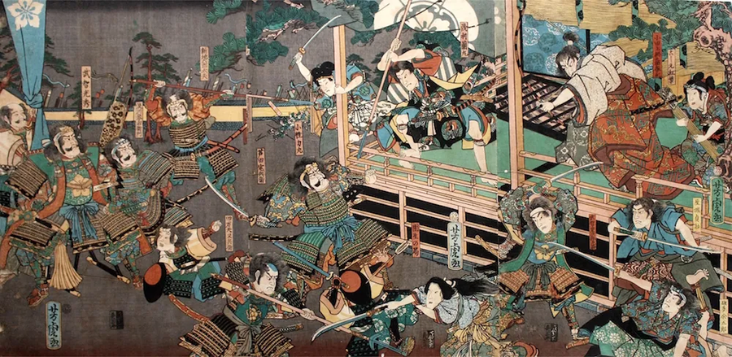

혼노지의 변
역사시대 사건이고(16세기) 관련 1차 사료도 많이 남았지만 정작 모반을 일으킨 아케치 미쓰히데측 사료는 두루뭉실한게 많아서 미쓰히데가 뭔 생각으로 주군인 오다 노부나가를 죽인건지에 대해 논란이 많다. 관련 흑막설도 쇼군 흑막설, 천황 흑막설, 마쓰다이라(=도쿠가와) 흑막설, 도요토미 흑막설 등 차고 넘친다
???:전국시대때 차고 넘친게 하극상 성왕패구인데 그냥 미쓰히데가 자기가 오야되겠다고 통수때린거 아닌가요?
갈!!!! 그럼 재미가 없잖아!!!
???: 대머리라고 놀려서 그런거라고!!!!